학원 소개
학원 소개
찾아오시는 길
한식 과정
강사 소개
수업 커리큘럼
중식 과정
강사 소개
수업 커리큘럼
일식 과정
강사 소개
수업 커리큘럼
게 시 판
공지사항
건의사항
소중한 수강평
마이페이지
아이디 찾기
비밀번호 찾기
개인정보 수정
회원탈퇴
당신이 바로 차세대 요리사 No.1 !!
회원가입
|
로그인
|
ID/비밀번호 찾기
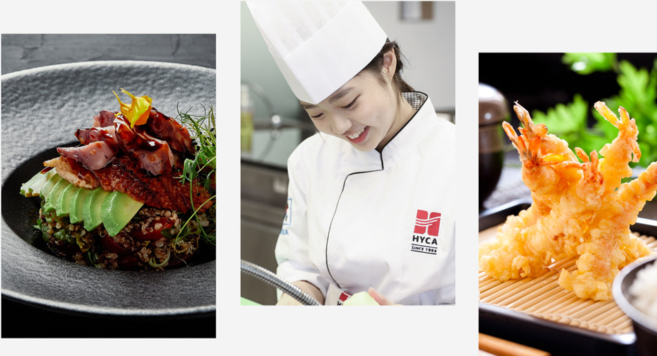
|강사 소개
| 강사 경력
2024.00.00 학원 수료
2024.00.00 오너 쉐프
2024.00.00 겸임 강사
2024.00.00 겸임 교수
|일식 조리 자격증 커리큘럼
커리큘럼 바로가기
월
화
수
목
금
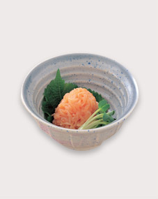
갑오징어 명란무침
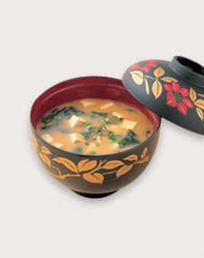
된장국
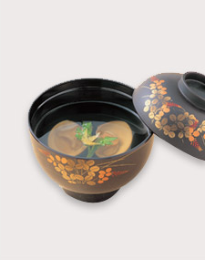
대합맑은국
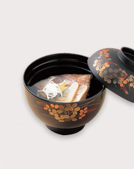
도미머리맑은국
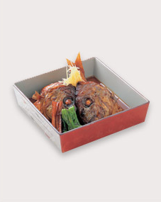
도미조림
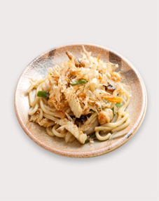
우동볶음
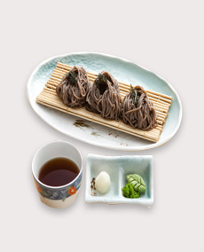
메밀국수
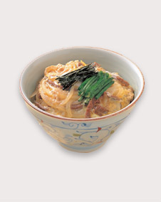
소고기덮밥
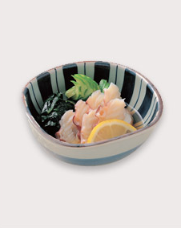
문어초회, 회삼초회
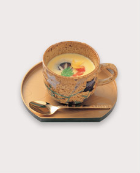
달걀찜, 도미술찜
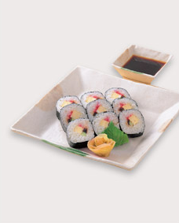
김초밥, 생선초밥
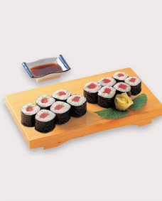
참치김초밥
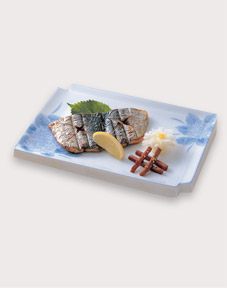
삼치소금구이
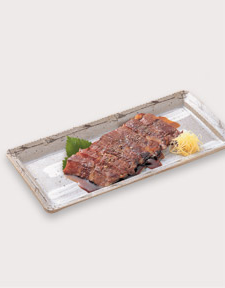
소고기 간장구이
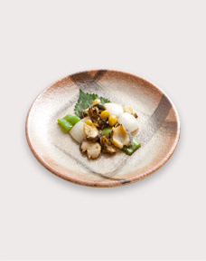
전복버터구이, 달걀말이